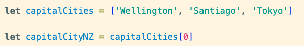
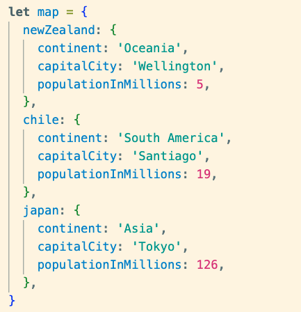
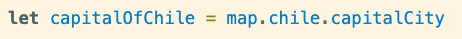
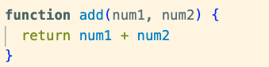
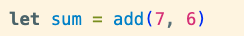

Let's start with an analogy to explain the relationship between
these.
Let's think of Matakana Village Farmer's Market, where people gather
to buy local products, have a meal, or even watch live
performances.
In this scenario
HTML will determine the layout of the market.
This would include, the location of the stalls, tables and benches,
and where designated walkways lie.
Next,
CSS would provide the visual theme; the
wooden elements on the stalls that give the Matakana Market that
rustic NZ feel. The colours, different styles on each stall, the
writing styles on the vendors' signs! It gives life to the Market.
JavaScript can be thought of as all the interactions
that take place. For example, when the magician performing asks for a
volunteer to participate in his performance, this interaction would be
facilited by JavaScript.
All three of these could be seen working together when a customer goes
to buy a savoury crepe from a stall. While JavaScript would be
analogous to human interactions involved, including taking the order
and handling the payments, HTML and CSS would dictate how the physical
set up is structured and what it looks like.
This might me the display of the menu items, the cash register itself,
and where the papers containing ne orders to be made are placed.
Control flow refers to the order in which statements are executed on a
document. Meanwhile, loops are structures that allow the repetition of
instruction a determined number of times.
We can use analogies again to simplify these and make them easy to
understand. Let's think of when we have to go get groceries.
On your drive to the grocery store, you might encounter some traffic.
You reach a give way sign. If you the road is clear and safe, you
continue to drive on. However, if it is unsafe to continue driving,
you stop until it is safe to continue your journey. In this scenario,
the give way sign determines the
control flow of your actions.
Once you have arrived to the grocery store, have got your trolley
ready to go, you look at your shopping list and determine where to
start.
Mr. Loop can help pick out the items on your grocery list.
Mr. Loop will ask you if there are still items to be picked up after
picking each item - as long as the answer to this is yes, he will
endeavour to keep picking your items. Once all items have been picked,
he will stop and let you take over the trolley to pay. This is exactly
how loops work. They repeat an action, or a set of actions, given some
parameters.
The DOM stands for
'Document Object Model' and represents the
structured content of an HTML document as a tree structure.
Interacting with and inspecting the DOM is
commonly done using browser developer tools. A common way developers
to access these is by right-clicking on an existing webpage and
selecting 'Inspect'. This allows developers to view and manipulate the
DOM structure in real time.
DOM interactions allow us to easily read,
access, and update contents of the HTML document dynamically, with
JavaScript often being used for these interactions.
The changes made to the DOM when using browser tools are only
temporary changes and only affect the
current session. This is done as a security measure which prevents
unauthorised modifications.
However, DOM manipulation can also create
permanent changes through JavaScript. These
changes might include modifying the content, structure, or style of a
webpage.
Arrays are data structures used in
JavaScript to store collections of elements. They can be thought of as
lists, where each element can be a string, variable or numerical
value. Each element in an array is assigned an index which starts from
0 and increments numerically by one for each subsequent element.
Arrays are denoted by square brackets "[]". These are therefore, used
when accessing the elements inside an array.
Take a look at the example below:

The capitalCities array contains three elements - three
capital cities. As these are strings (words), they must be enclosed by
''. To access the capital of NZ, we can create a new variable called
'capitalCityNZ' and assign it the value of the first element inside
the capitalCities array - the position of the first element is denoted
by zero, as shown in the example above.
Objects in JavaScript are a collection of
properties with their own values, and are denoted by curly brackets
"{}". For example, see below the object called 'map'.

This object contains three 'keys' inside, which happen to
be objects too. These are 'newZealand', 'chile', and 'japan'. Each of
these three objects contains three 'keys'; 'continent', 'capitalCity',
and 'population'.
If we wanted to know the capital city of Chile, we would type the
following code to 'access' this information;

The code above would assing the string 'Santiago' to the new variable
called you can use objectname. The dot notation is used to access
nested objects and their keys. keyname to access specific information.
Functions are a set of statements that performs a specific task. This
might be calculating a figure, or returning a value.
A key thing to note are that once a function is written, it will not
perform any action until it is 'called' at some point in the code.
Functions take some sort of input and return an output where these two
have a clear relationship.
Functions can perform arithmetic operations as per the example
below.

The function above takes two parameters as inputs and return a single
numerical value of their sum.
However, the function needs to be called before anything can happen.
The snippet below shows the function being called as the variable
'sum' is assigned the value of the sum of the two parameters.

Now the 'sum' variable has the value of the sum of 7 and 6; 13.